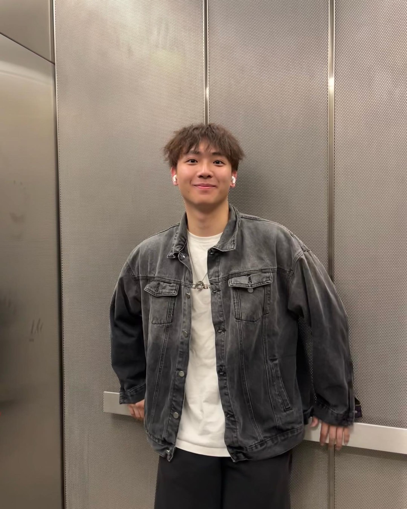

Felix Guo
Junior Software Developer

Hi there! I'm Felix, currently navigating my sophomore year at NYU where I'm double majoring in Math & CS – a blend I absolutely love. I am passionate about combining design and function through web development. While currently specializing front-end development, I plan to progress towards full-stack.


Experience
Data Analyst, NYU Chinese Women basketball
Sep 2023 - Dec 2023
Analyzed basketball advanced statistics such as Win Shares and Player Efficiency Rating using Python to understand indicators of player weaknesses and strengths; Visualized data analyzes in 20+ player reports to help them understand how to improve performance
Projects
- Hospital Review Platform (Columbia Divhacks 2023), RateMyHospital
- Project Name, Link
- Project Name, Link